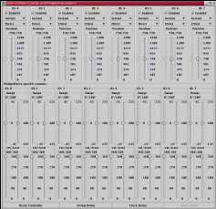

Introduction
Documentation
Platform Neutral
Metadata
Driver Release Notes
Get Involved
SourceForge
Family
|
|
Note
|

The driver for this device is available
since release 0.4p2.
This driver will not support the serial
interface: it is too slow, and the serial
port estate is really
expensive. The user is encouraged to use the
USB connection instead.
|
|
Good Things
|
All the good things from the previous
revision are still in place. In addition,
- The number of servos supported now
is 8
- Servo velocity can be controlled
- Servo acceleration can be controlled
- Servo position feedback is
available from the controller
- Communication interface has changed
from
control_msg to
bulk write - less overhead
- The device is now bootable - if
there's a problem with the
firmware, you don't have to order a
new one, just get the fresh
firmware and reboot it
- Dual (USB/Serial) interface
|
|
Bad Things
|
Current firmware revision doesn't support
the servo shutoff - working on it.
|
|
Changes
|
The device has to be booted before it
advertises itself as a servo controller -
this is being handled by
PhidgetServoController code.
The USB protocol has changed significantly,
as well as the way the device is controlled.
In the previous revision, the servo position
was controlled by setting the pulse length
in microseconds, now the value is the
rotation angle in degrees (as
float).
Be sure to read the release notes for the previous
revision, they contain tips on making
the USB subsystem work.
|
|
Conclusion
|
It was worth the wait.
|
|

{kind=link}